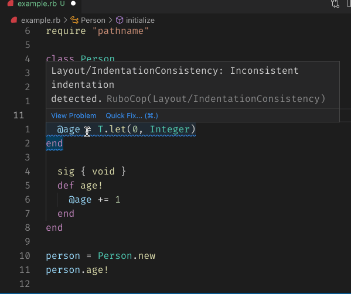

class RubyLsp::Requests::CodeActions

The code actions request informs the editor of RuboCop quick fixes that can be applied. These are accessible by hovering over a specific diagnostic.
Example¶ ↑
def say_hello puts "Hello" # --> code action: quick fix indentation end
Public Class Methods
new(document, range, context)
click to toggle source
Calls superclass method
RubyLsp::Requests::BaseRequest::new
# File lib/ruby_lsp/requests/code_actions.rb, line 29 def initialize(document, range, context) super(document) @uri = T.let(document.uri, URI::Generic) @range = range @context = context end
Public Instance Methods
run()
click to toggle source
# File lib/ruby_lsp/requests/code_actions.rb, line 38 def run diagnostics = @context[:diagnostics] code_actions = diagnostics.filter_map do |diagnostic| code_action = diagnostic.dig(:data, :code_action) next if code_action.nil? # We want to return only code actions that are within range or that do not have any edits, such as refactor # code actions range = code_action.dig(:edit, :documentChanges, 0, :edits, 0, :range) code_action if diagnostic.dig(:data, :correctable) && cover?(range) end # Only add refactor actions if there's a non empty selection in the editor code_actions << refactor_code_action(@range, @uri) unless @range.dig(:start) == @range.dig(:end) code_actions end